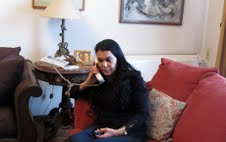

پذيرش > تریبون > گزارش كمپين > عزه کمال،روزنامه نگار و نویسنده مصری: انقلاب ادامه دارد


 عزه کمال،روزنامه نگار و نویسنده مصری: انقلاب ادامه دارد عزه کمال،روزنامه نگار و نویسنده مصری: انقلاب ادامه دارد
17 اسفند 1389 - ترجمه : شهرزاد امین - نسخه قابل چاپ

تغییر برای برابری : روزنامه نگار و نویسنده مصری, عزه کمال در مصاحبه ای با رسانه فمینیست پرسپکتیو در سوئد، تاکید میکند که انقلاب آغاز شده است.پلیس امنیتی مصر همچنان به دستگیری تظاهر کنندگان به مبارزه برای عدم افشای اسناد شکنجه هایی که سابقن اتفاق افتاده ادامه میدهد! همزمان گروههای مختلف زنان خود را برای تضمین احقاق حقوق خویش در آینده مصر سازماندهی میکنند.
27 تظاهر کننده دستگیر شدند و دو زن جوان نیز در بین آنان بودند. پلیس به سوی تظاهر کنندگانی که به سا ختمان مرکزی پلیس امنیتی حمله کرده بودند آتش گشود. آنان می خواستند مانع از بین بردن مدارک مخفی توسط پلیس شوند. سربازان ارتش مانع تظاهرکنندگان شده و با باطوم به آنها حمله کردند. پلیس امنیتی موفق شد مقداری از مدارک را که نشان دهنده شکنجه، قتلهای سیاسی ورشوه خواریها بود را از بین ببرد. اما مردم هم به یکسری مدارک مخفی دست یافتند. در حال حاضر صفحه ای در فیس بوک مختص این مدارک تحت نام امن دولا لیکس باز شده است.
https://www.facebook.com/AmnDawlaLeaksEN
مردم در قاهره میگویند انقلاب آغاز شده است.
ما در اتاق آفتابی آزا کمال به صحبت در باره چگونگی ادامه مبارزه مردم مصر می نشینیم. آزا نویسنده و روزنامه نگار است او همزمان یک مبارز احقاق حقوق زنان نیز هست. او و دخترش فعالانه در حرکتهای اعتراضی مردم مصر شرکت کردند وشبهای زیادی را نیز در میدان تحریر خوابیدند. دختر 20 ساله اش در حمله به مرکز پلیس شرکت داشت. بنا به گفته مردم، پلیس امنیتی به دستگیری و شکنجه مردم ادامه می دهد و گاهن احساس می شود که پلیسها با لباس شخصی در همه جا حضور دارند. تلفنهای آزا مرتبن به صدا در می آیند و بخش عمده ای از این مکالمات در ارتباط با تظاهرات 8 مارس است. تشکلی که او به آن تعلق دارد. یکی از سازماندهندگان تظاهرات 8 مارس است. اولین 8 مارس بعد از سقوط مبارک به شدت برنامه ریزی می شود. 11 روز قبل کمیته ای برای تدارک تظاهرات میلیونی 8 مارس در میدان تحریر تشکیل شد. خواسته تظاهر کنندگان این است که زنان در مصر جدید نباید نادیده گرفته شوند و قوانین تبعیض آمیز بایستی برداشته شود.
 خواسته امسال آزادی است. زنان بایستی در تمامی سطوح سیاسی حضور داشته باشند، از کمیته تدوین قانون اساسی تا دولت آینده. آزا کمال میگوید که ما میخواهیم که زنان در تمامی ارگانهای تصمیم گیری حضور داشته باشند. خواسته امسال آزادی است. زنان بایستی در تمامی سطوح سیاسی حضور داشته باشند، از کمیته تدوین قانون اساسی تا دولت آینده. آزا کمال میگوید که ما میخواهیم که زنان در تمامی ارگانهای تصمیم گیری حضور داشته باشند.
آیا روز زن در دوره حاکمیت مبارک جشن گرفته میشد؟
آری اما نه به این شکل که زنان به سوی میدان تحریر برای احقاق حقوقشان حرکت کنند. تشکلهای زنان سمینارهایی را با تمهای مختلف برای بحث و گفتگو برگزار میکردند . اگر چه سال گذشته تظاهراتی در را در مقابل وزارت دادگستری در اعتراض به ممنوعیت احراز شغل قضاوت برای زنان برگزار کردیم. از طرف دولت نیز مراسمی برگزار میشد.
آعزه ، مانند سایر زنانی که من در اینجا با انها گفتگو کرده ام، میگوید که زنان مانند مردان نقش گسترده ای و برابری در این انقلاب ایفا کرده اند.
ما تظاهرات کرده ایم ، در میدان تحریر خوابیده ایم، زنان کتک خورده اند و به قتل رسیده اند. این انقلاب همانقدر که انقلاب مردان است، انقلاب زنان هم هست. ما به شدت برای احقاق حقوق شهروندی برابرمان مبارزه می کنیم. با تجربه انقلاب های گذشته می فهمیی که می بایست همین الان بر روی این حقوق پافشاری کنیم و نگذاریم حقوقمان محدود شود. برخی از قوانین که بر اساس قوانین شریعت پایه ریزی شده، زنان رادر حکومت مبارک مورد تبعیض قرار میداد. چند همسری، عدم برخورداری از حق ارث برابر و محرومیت از شغل قضاوت چند نمونه از این قوانین هستند. قوانین در زمان ریاست جمهوری ناصر سکولارتر بودند اما انور سادات در مبارزه با جریانات چپ امتیازاتی به اخوان المسلمین داد. بعد از آن پارگراف 2 ضمیمه قوانین جاری شد که معنا و مفهوم آن تطبیق ان با قوانین شریعت بود. و اولین آن مربوط به حقوق زنان بود.
آیا تغییرقوانین از طرف اکثریت زنان مصری حمایت میشود؟ آیا این خواسته عموم زنان است؟
ما فکر میکنیم که عموم مردم مصر دولتی مستقل از دین می خواهند، جامعه ای با قوانین مدنی. اما اخوان المسلمین و هوادارانشان مخالف بر چیده شدن این قوانین هستند و انان مبارزه ی سختی را برای حفظ این قوانین در پیش خواهند گرفت. مبارزه سختی در پیش خواهیم داشت.
عزه تعریف میکند که زنان طرفدار اخوان المسلمین در شبهای تحریر در کنار زنان سکولار بودند و آنان را همراهی می کردند. آنان با هم نشست و برخاست می کردند و فضایی حاکی از پذیرش و احترام به همدیگر حاکم بود. همبستگی بین مردم با هر عقیده و مرامی حکایتی عمومی در قاهره است. هنوز هم در گوشه و کنار میدان تحریر شاهد گروههای مختلفی هستیم که مشغول بحث و گفتگو با هم هستند اما این بحثها به درگیری کشیده نمیشود.
عزه قبل از اینکه تلفنش را بعد از آخرین مکالمه خاموش کند تاکید میکند که انقلاب ادامه دارد .
ما به تعدادی از خواسته هایمان رسیده ایم اما هنوزبخشی از رژیم گذشته در حاکمیت حضور دارند. آنها مسئله ساز هستند ما باید مواظب باشیم و از مبارزه عقب نشینی نکنیم. ما باید به سمت انتخابات آزاد پیش برویم و رییس جمهور مناسبی را انتخاب کنیم. اما نیروهایی وجود دارند که میخواهند ابتدا انتخابات مجلس برگزار شود و مردم نمایندگان مجلس را انتخاب کنند. این حرکت اشتباهی خواهد بود چرا که رشوه خواران کلیدی رژیم و اخوان المسلمین می خواهند که اهرمهای کلیدی قدرت را در مجلس در دست بگیرند. فعالین سیاسی، نویسندگان، هنرپیشه ها،روزنامه نگاران و فعالین حقوق زنان بر برگذاری انتخابات ریاست جمهوری پافشاری خواهند کرد. ما معتقدیم که برگذاری انتخابات ریاست جمهوری برای آینده کشورمان حیاتی است. ما از همه امکاناتمان برای آگاه کردن افکارعمومی در این زمینه استفاده خواهیم کرد و با تعدادی از وزیران جدید دولت فعلی که از انقلاب حمایت می کنند نیز وارد مذاکره خواهیم شد.
ارسال به
بالاترین
،
توییتر
،
فریندفید
،
فیسبوک
در همين بخش :
 دهمین دورۀ مراسم تندیس صدیقه دولت آبادی ۱۳۹۲ دهمین دورۀ مراسم تندیس صدیقه دولت آبادی ۱۳۹۲
کارت پستالهایی به بهانهی هشت مارس و به یاد همهی مبارزین راه برابری
بیانیه بیش از 350 تن از مدافعان حقوق زنان به مناسبت روز جهانی زن؛ زنان هر روز فرودستتر میشوند
لباسی که برای تن ما دوخته اند! /اعظم بهرامی
چالشها و چشمانداز فعالیت مدنی زنان
ديگر بخش ها :
طرح یک میلیون امضا
|
مقالات
|
سایت نوشته ها
|
اخبار
|
گزارش كمپين
|
گفت و گو
|
علیه سکوت
|
كوچه به كوچه
|
نامه های شما
|
گزارش ویژه
|
گفتگو با اعضا
|
ویژه سالگرد کمپین
|
تصویر برابری
|
دل آرام علی
|
تریبون
|
مقالات
|
تاریخ شفاهی
|
خارج از چارچوب
|
کتابخانه
|
درباره کمپین
|
کمپین در شهرها
|
کمپین در بند
|
صدای تغییر
|
ویژه 22 خرداد
|
لایحه حمایت از خانواده
|
گالری
|
عشا مومنی
|
امیر یعقوبعلی
|
خدیجه مقدم
|
راحله عسگری زاده و نسیم خسروی
|
پروین اردلان،جلوه جواهری، مریم حسین خواه، ناهید کشاورز
|
زینب پیغمبرزاده
|
سعیده امین، سارا ایمانیان، محبوبه حسین زاده، ناهید کشاورز و همایون نامی
|
احترام شادفر
|
نسیم سرابندی زاده،فاطمه دهدشتی
|
وبلاگ مهمان
|
پرونده خرم آباد
|
دستگیری ها
|
مریم مالک
|
پرستو اللهیاری
|
مهرنوش اعتمادی
|
سمیه رشیدی
|
Other Languages
|
همراهان
|
«فراخوان کمپین ده روز با بهاره هدایت»
| English
|